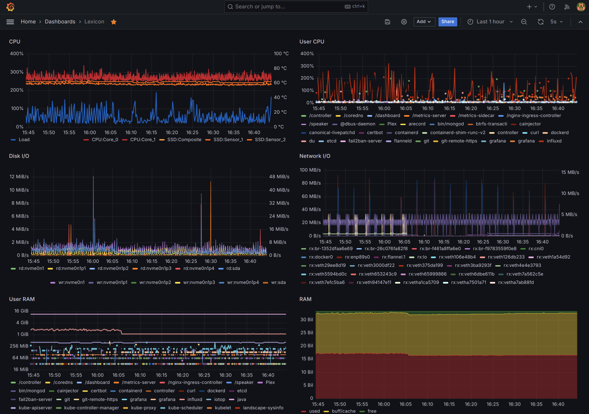

Monitoring with InfluxDB and Grafana on Kubernetes
Four years later, I still have not gotten the hang of telegraf, I'm still running my own home-made detailed system and process monitoring reporting to InfluxDB running container-lessly in lexicon and I feel the time is up for moving these services into the Kubernetes cluster. Besides keeping them updated, what I'm most looking forward is leveraging the cluster's infrastructure to expose these services (only) over HTTPS with automatically renewed SSL certs.
Current Setup
Continuous Monitoring describes the current, complete setup with the OSS versions of InfluxDB and Grafana.
Kubernetes Deployment
There quite a few articles out there explaining how to
run all 3 components (Telegraf, InfluxDB, Grafana) on
Docker, on some of which the following
monitoring.yaml deployment is (very loosly) based:
apiVersion: v1
kind: Namespace
metadata:
name: monitoring
---
apiVersion: v1
kind: PersistentVolume
metadata:
name: influxdb-pv
labels:
type: local
namespace: monitoring
spec:
storageClassName: manual
capacity:
storage: 30Gi
accessModes:
- ReadWriteOnce
hostPath:
path: /home/k8s/influxdb
---
apiVersion: v1
kind: PersistentVolumeClaim
metadata:
name: influxdb-pv-claim
namespace: monitoring
spec:
storageClassName: manual
volumeName: influxdb-pv
accessModes:
- ReadWriteOnce
resources:
requests:
storage: 30Gi
---
apiVersion: apps/v1
kind: Deployment
metadata:
namespace: monitoring
labels:
app: influxdb
name: influxdb
spec:
replicas: 1
selector:
matchLabels:
app: influxdb
template:
metadata:
labels:
app: influxdb
spec:
hostname: influxdb
containers:
- image: docker.io/influxdb:1.8
name: influxdb
volumeMounts:
- mountPath: /var/lib/influxdb
name: influxdb-data
securityContext:
runAsUser: 114
runAsGroup: 114
volumes:
- name: influxdb-data
persistentVolumeClaim:
claimName: influxdb-pv-claim
---
apiVersion: v1
kind: Service
metadata:
labels:
app: influxdb
name: influxdb-svc
namespace: monitoring
spec:
ports:
- port: 18086
protocol: TCP
targetPort: 8086
nodePort: 30086
selector:
app: influxdb
type: NodePort
---
apiVersion: v1
kind: ConfigMap
metadata:
name: telegraf
namespace: monitoring
labels:
app: telegraf
data:
telegraf.conf: |+
[agent]
hostname = "influxdb"
[[outputs.influxdb]]
urls = ["http://influxdb-svc:18086/"]
database = "telegraf"
timeout = "5s"
[[inputs.cpu]]
percpu = true
totalcpu = true
collect_cpu_time = false
report_active = false
[[inputs.disk]]
ignore_fs = ["tmpfs", "devtmpfs", "devfs"]
[[inputs.diskio]]
[[inputs.kernel]]
[[inputs.mem]]
[[inputs.processes]]
[[inputs.swap]]
[[inputs.system]]
[[inputs.docker]]
endpoint = "unix:///var/run/docker.sock"
---
apiVersion: apps/v1
kind: DaemonSet
metadata:
name: telegraf
namespace: monitoring
labels:
app: telegraf
spec:
selector:
matchLabels:
name: telegraf
template:
metadata:
labels:
name: telegraf
spec:
containers:
- name: telegraf
image: docker.io/telegraf:1.30.1
env:
- name: HOSTNAME
value: "influxdb"
- name: "HOST_PROC"
value: "/rootfs/proc"
- name: "HOST_SYS"
value: "/rootfs/sys"
- name: INFLUXDB_DB
value: "telegraf"
volumeMounts:
- name: sys
mountPath: /rootfs/sys
readOnly: true
- name: proc
mountPath: /rootfs/proc
readOnly: true
- name: docker-socket
mountPath: /var/run/docker.sock
- name: utmp
mountPath: /var/run/utmp
readOnly: true
- name: config
mountPath: /etc/telegraf
terminationGracePeriodSeconds: 30
volumes:
- name: sys
hostPath:
path: /sys
- name: docker-socket
hostPath:
path: /var/run/docker.sock
- name: proc
hostPath:
path: /proc
- name: utmp
hostPath:
path: /var/run/utmp
- name: config
configMap:
name: telegraf
---
apiVersion: v1
kind: PersistentVolume
metadata:
name: grafana-pv
labels:
type: local
namespace: monitoring
spec:
storageClassName: manual
capacity:
storage: 3Gi
accessModes:
- ReadWriteOnce
hostPath:
path: /home/k8s/grafana
---
apiVersion: v1
kind: PersistentVolumeClaim
metadata:
name: grafana-pv-claim
namespace: monitoring
spec:
storageClassName: manual
volumeName: grafana-pv
accessModes:
- ReadWriteOnce
resources:
requests:
storage: 3Gi
---
apiVersion: apps/v1
kind: Deployment
metadata:
namespace: monitoring
labels:
app: grafana
name: grafana
spec:
replicas: 1
selector:
matchLabels:
app: grafana
template:
metadata:
labels:
app: grafana
spec:
containers:
- image: docker.io/grafana/grafana:10.4.2
env:
- name: HOSTNAME
valueFrom:
fieldRef:
fieldPath: spec.nodeName
- name: "GF_AUTH_ANONYMOUS_ENABLED"
value: "true"
- name: "GF_SECURITY_ADMIN_USER"
value: "admin"
- name: "GF_SECURITY_ADMIN_PASSWORD"
value: "PLEASE_CHOOSE_A_SENSIBLE_PASSWORD"
name: grafana
volumeMounts:
- name: grafana-data
mountPath: /var/lib/grafana
securityContext:
runAsUser: 115
runAsGroup: 115
fsGroup: 115
volumes:
- name: grafana-data
persistentVolumeClaim:
claimName: grafana-pv-claim
---
apiVersion: v1
kind: Service
metadata:
labels:
app: grafana
name: grafana-svc
namespace: monitoring
spec:
ports:
- port: 13000
protocol: TCP
targetPort: 3000
nodePort: 30300
selector:
app: grafana
type: NodePort
This setup reuses the existing dedicated users
influxdb (114) and grafana (115) and requires
new directories owned by these users:
$ ls -ld /home/k8s/influxdb/ /home/k8s/grafana/
drwxr-xr-x 1 grafana grafana 0 Mar 28 23:25 /home/k8s/grafana/
drwxr-xr-x 1 influxdb influxdb 0 Mar 28 21:54 /home/k8s/influxdb/
$ kubectl apply -f monitoring.yaml
namespace/monitoring created
persistentvolume/influxdb-pv created
persistentvolumeclaim/influxdb-pv-claim created
deployment.apps/influxdb created
service/influxdb-svc created
configmap/telegraf created
daemonset.apps/telegraf created
persistentvolume/grafana-pv created
persistentvolumeclaim/grafana-pv-claim created
deployment.apps/grafana created
service/grafana-svc created
$ kubectl -n monitoring get all
NAME READY STATUS RESTARTS AGE
pod/grafana-6c49f96c47-hx7kd 1/1 Running 0 73s
pod/influxdb-6c86444bb7-kt4sx 1/1 Running 0 73s
pod/telegraf-pwtkh 1/1 Running 0 73s
NAME TYPE CLUSTER-IP EXTERNAL-IP PORT(S) AGE
service/grafana NodePort 10.111.217.211 <none> 3000:30300/TCP 73s
service/influxdb NodePort 10.109.61.156 <none> 8086:30086/TCP 73s
NAME DESIRED CURRENT READY UP-TO-DATE AVAILABLE NODE SELECTOR AGE
daemonset.apps/telegraf 1 1 1 1 1 <none> 73s
NAME READY UP-TO-DATE AVAILABLE AGE
deployment.apps/grafana 1/1 1 1 73s
deployment.apps/influxdb 1/1 1 1 73s
NAME DESIRED CURRENT READY AGE
replicaset.apps/grafana-6c49f96c47 1 1 1 73s
replicaset.apps/influxdb-6c86444bb7 1 1 1 73s
Grafana is able to query InfluxDB at http://influxdb:8086/ and the following steps will be to enable accessing both Grafana and InfluxDB over HTTPS externally.
Grafana Setup
Once InfluxDB is ready and Telegraf is feeding data into it, setup Grafana by creating a Data source:
- Type: InfluxDB
- Name:
telegraf - Query language: InfluxQL
- URL: http://influxdb-svc:18086 (see Pod Hostname DNS)
- Database:
telegraf
Secure InfluxDB
The next step is to add authentication to InfluxDB. This will require updating Telegraf and Grafana.
InfluxDB Authentication
Authentication and authorization in InfluxDB starts by enabling authentication.
Create at least one admin user:
$ influx -host localhost -port 30086
Connected to http://localhost:30086 version 1.8.10
InfluxDB shell version: 1.6.7~rc0
> USE telegraf
Using database telegraf
> CREATE USER admin WITH PASSWORD '**********' WITH ALL PRIVILEGES
Warning: the password must be enclosed in
single quotes (').
Enable authentication in the deployment
by setting the INFLUXDB_HTTP_AUTH_ENABLED variable:
---
apiVersion: apps/v1
kind: Deployment
...
spec:
containers:
- image: docker.io/influxdb:1.8
env:
- name: "INFLUXDB_HTTP_AUTH_ENABLED"
value: "true"
name: influxdb
Restart InfluxDB:
The result is not that connections are rejected, but access to the database is denied:
$ kubectl -n monitoring logs telegraf-2k8hb | tail -1
2024-04-20T18:24:16Z E! [outputs.influxdb] E! [outputs.influxdb] Failed to write metric (will be dropped: 401 Unauthorized): unable to parse authentication credentials
$ influx -host localhost -port 30086
Connected to http://localhost:30086 version 1.8.10
InfluxDB shell version: 1.6.7~rc0
> USE telegraf
ERR: unable to parse authentication credentials
DB does not exist!
Update Grafana
Updating the InfluxDB connection under Data soures
in Grafana, by adding the username (admin) and
password, is enough to get the connextion restored.
Update Telegraf
To restore access to Telegraf, add the credentials
to the ConfigMap as follows:
---
apiVersion: v1
kind: ConfigMap
...
data:
telegraf.conf: |+
[[outputs.influxdb]]
urls = ["http://influxdb-svc:18086/"]
database = "telegraf"
username = "admin"
password = "*********************"
And restart telegraf:
HTTPS Access
To do this, add an Ingress pointing to each service:
---
apiVersion: networking.k8s.io/v1
kind: Ingress
metadata:
name: grafana-ingress
namespace: monitoring
annotations:
acme.cert-manager.io/http01-edit-in-place: "true"
cert-manager.io/issue-temporary-certificate: "true"
cert-manager.io/cluster-issuer: letsencrypt-prod
spec:
ingressClassName: nginx
rules:
- host: gra.ssl.uu.am
http:
paths:
- path: /
pathType: Prefix
backend:
service:
name: grafana-svc
port:
number: 3000
tls:
- secretName: grafana-tls-secret
hosts:
- gra.ssl.uu.am
---
apiVersion: networking.k8s.io/v1
kind: Ingress
metadata:
name: influxdb-ingress
namespace: monitoring
annotations:
acme.cert-manager.io/http01-edit-in-place: "true"
cert-manager.io/issue-temporary-certificate: "true"
cert-manager.io/cluster-issuer: letsencrypt-prod
spec:
ingressClassName: nginx
rules:
- host: inf.ssl.uu.am
http:
paths:
- path: /
pathType: Prefix
backend:
service:
name: influxdb-svc
port:
number: 8086
tls:
- secretName: influxdb-tls-secret
hosts:
- inf.ssl.uu.am
$ kubectl apply -f monitoring.yaml
...
ingress.networking.k8s.io/grafana-ingress created
ingress.networking.k8s.io/influxdb-ingress created
Each Ingress will need to obtain its own certificate, which requires patching each ACME solver to listen on port 32080 (set up in router), leveraging the script for Monthly renewal of certificates (automated):
This script runs every 30 minutes via crontab
but can also be run manually to speed things up.
If the external port 80 seems to be timing out, it may be necessary to remove the port forwarding rule in the router and add it again.
Once DNS records are updated, Grafana should be available at https://gra.ssl.uu.am and InfluxDB should be available at https://inf.ssl.uu.am
Troubleshooting
Persistent Volumes
Because there are multiple PersistentVolume and
PersistentVolumeClaim, it is necessary to link them
explicitly by adding volumeName to each
PersistentVolumeClaim, otherwise volatile volumes
are used which are then discarded each time the
deployment is deleted.
Ingress Multiple SSL Certificates
When multiple Ingress are created in the same
namespace, it is also necessary to give each a
different tls.secretName for each tls.hosts
value; otherwise only one SSL certificate will be
created (and signed) and it won't be valid for all
subdomains in tls.hosts.
Pod Hostname DNS
For this setup to work, telegraf and grafana need
to send HTTP requests to influxdb. At first, it was
enough to set the hostname value in the influxdb
deployment, so that other services can connect to it
via the internal port and DNS: http://influxdb:8086
However, after the deployment was deleted and applied
a few times, telegraf and grafana were no longer
able to connect; the internal DNS would no longer
return an IP address for the influxdb hostname:
$ kubectl -n monitoring exec -i -t telegraf-zzs52 -- ping -c 1 kube-dns.kube-system.svc.cluster.local
PING kube-dns.kube-system.svc.cluster.local (10.96.0.10) 56(84) bytes of data.
$ kubectl -n monitoring exec -i -t telegraf-zzs52 -- ping -c 1 influxdb.monitoring.svc.cluster.local
ping: influxdb.monitoring.svc.cluster.local: Name or service not known
command terminated with exit code 2
Telegraf cannot write to InfluxDB:
$ kubectl -n monitoring logs telegraf-5rv6z | tail -2
2024-04-20T16:05:50Z E! [outputs.influxdb] When writing to [http://influxdb:8086/]: failed doing req: Post "http://influxdb:8086/write?db=telegraf": dial tcp: lookup influxdb on 10.96.0.10:53: no such host
2024-04-20T16:05:50Z E! [agent] Error writing to outputs.influxdb: could not write any address
Grafana cannot query InfluxDB:
Get "http://influxdb:8086/query?db=telegraf&epoch=ms&q=SELECT++FROM+%22%22+WHERE+time+%3E%3D+1713606668691ms+and+time+%3C%3D+1713628268691ms": dial tcp: lookup influxdb on 10.96.0.10:53: no such host
After getting tired of not finding relevant information
to troubleshoot this, updated the deployment and
Grafana to query InfluxDB via its NodePort at
10.0.0.6:30086
After updating dhe deployement, restart telegraf:
Still went to to check whether DNS queries are being received/processed? and after adding logging of queries and trying again:
$ kubectl -n monitoring exec -i -t telegraf-zzs52 -- ping -c 1 kube-dns.kube-system.svc.cluster.local
PING kube-dns.kube-system.svc.cluster.local (10.96.0.10) 56(84) bytes of data.
$ kubectl -n monitoring exec -i -t telegraf-zzs52 -- ping -c 1 kube-dns.kube-system
PING kube-dns.kube-system.svc.cluster.local (10.96.0.10) 56(84) bytes of data.
$ kubectl -n monitoring exec -i -t telegraf-zzs52 -- ping -c 1 influxdb.monitoring
ping: influxdb.monitoring: Name or service not known
command terminated with exit code 2
$ kubectl -n monitoring exec -i -t telegraf-zzs52 -- ping -c 1 influxdb.monitoring.svc.cluster.local
ping: influxdb.monitoring.svc.cluster.local: Name or service not known
command terminated with exit code 2
$ kubectl logs --namespace=kube-system -l k8s-app=kube-dns
[INFO] 10.244.0.216:34419 - 28080 "AAAA IN kube-dns.kube-system.monitoring.svc.cluster.local. udp 67 false 512" NXDOMAIN qr,aa,rd 160 0.00013723s
[INFO] 10.244.0.216:34419 - 8637 "A IN kube-dns.kube-system.monitoring.svc.cluster.local. udp 67 false 512" NXDOMAIN qr,aa,rd 160 0.000129401s
[INFO] 10.244.0.216:43649 - 36293 "A IN kube-dns.kube-system.svc.cluster.local. udp 56 false 512" NOERROR qr,aa,rd 110 0.000073868s
[INFO] 10.244.0.216:43649 - 62915 "AAAA IN kube-dns.kube-system.svc.cluster.local. udp 56 false 512" NOERROR qr,aa,rd 149 0.000107266s
[INFO] 10.244.0.216:42170 - 53476 "A IN influxdb.monitoring.svc.cluster.local. udp 55 false 512" NXDOMAIN qr,aa,rd 148 0.000116052s
[INFO] 10.244.0.216:42170 - 27874 "AAAA IN influxdb.monitoring.svc.cluster.local. udp 55 false 512" NXDOMAIN qr,aa,rd 148 0.000141714s
[INFO] 10.244.0.216:51203 - 31196 "A IN influxdb.monitoring.cluster.local. udp 51 false 512" NXDOMAIN qr,aa,rd 144 0.000056868s
[INFO] 10.244.0.216:51203 - 64478 "AAAA IN influxdb.monitoring.cluster.local. udp 51 false 512" NXDOMAIN qr,aa,rd 144 0.000128173s
[INFO] 10.244.0.216:51687 - 28937 "A IN influxdb.monitoring.v.cablecom.net. udp 52 false 512" NXDOMAIN qr,rd,ra 139 0.020606519s
[INFO] 10.244.0.216:51687 - 65290 "AAAA IN influxdb.monitoring.v.cablecom.net. udp 52 false 512" NXDOMAIN qr,rd,ra 139 0.021962102s
NXDOMAIN means that the domain is non-existent, providing a DNS error message that is received by the client (Recursive DNS server). This happens when the domain has been requested but cannot be resolved to a valid IP address. All in all, NXDOMAIN error messages simply mean that the domain does not exist.
This only happens with the pod's hostname, but we can
resolve its Service:
$ kubectl -n monitoring exec -i -t telegraf-zzs52 -- ping -c 1 grafana-svc.monitoring
PING grafana-svc.monitoring.svc.cluster.local (10.109.127.41) 56(84) bytes of data.
All this is because
there's no A record for a Pod born of a Deployment
so the DNS service will not resolve pods, but instead
services, and the port exposed is that of the service (port) instead of that of the pod
(targetPort), so the correct URL to reach InfluxDB
is http://influxdb-svc:18086
The change of service name and port happened while
creating the Ingress for HTTP access:
$ kubectl -n monitoring get all
NAME READY STATUS RESTARTS AGE
pod/grafana-7647f97d64-k8h5m 1/1 Running 0 19h
pod/influxdb-84dd8bc664-5m9fx 1/1 Running 0 17h
pod/telegraf-c59gg 1/1 Running 0 17h
NAME TYPE CLUSTER-IP EXTERNAL-IP PORT(S) AGE
service/grafana-svc NodePort 10.109.127.41 <none> 13000:30300/TCP 19h
service/influxdb-svc NodePort 10.109.191.140 <none> 18086:30086/TCP 19h
NAME DESIRED CURRENT READY UP-TO-DATE AVAILABLE NODE SELECTOR AGE
daemonset.apps/telegraf 1 1 1 1 1 <none> 17h
NAME READY UP-TO-DATE AVAILABLE AGE
deployment.apps/grafana 1/1 1 1 19h
deployment.apps/influxdb 1/1 1 1 19h
NAME DESIRED CURRENT READY AGE
replicaset.apps/grafana-7647f97d64 1 1 1 19h
replicaset.apps/influxdb-6c86444bb7 0 0 0 19h
replicaset.apps/influxdb-84dd8bc664 1 1 1 17h
replicaset.apps/influxdb-87c66ff6 0 0 0 17h
Further reading: Connecting the Dots: Understanding How Pods Talk in Kubernetes Networks.
Conmon Migration
Continuous Monitoring can now be migrated to report metrics to a (new) database in the new InfluxDB and serve dashboards securely over HTTPS from the new Grafana.
Create a monitoring database (separate from the
telegraf database) and set its retencion period to
30 days:
$ influx -host localhost -port 30086
Connected to http://localhost:30086 version 1.8.10
InfluxDB shell version: 1.6.7~rc0
> auth
username: admin
password:
> CREATE DATABASE monitoring
> USE monitoring
Using database monitoring
> CREATE RETENTION POLICY "30_days" ON "monitoring" DURATION 30d REPLICATION 1
> ALTER RETENTION POLICY "30_days" on "monitoring" DURATION 30d REPLICATION 1 DEFAULT
In Grafana, create a new InfluxDB connection under Data sources pointing to this database.
In the conmon scripts, update the curl domain
to use HTTP Basic authentication, and update
the TARGET to point at the new InfluxDB service;
the value can be any of the following:
- http://localhost:30086 only on the server itself
- http://lexicon:30086 when running in the same LAN
- https://inf.ssl.uu.am when running out of LAN
To accommodate for a transition period, scripts can report to both InfluxDB instances until the migration is over.
First, store the InfluxDB credentials in
/etc/conmon/influxdb-auth and make the
file readable only to the root user:
DBNAME=monitoring
TARGET='http://lexicon:8086'
TARGET2='http://lexicon:30086'
...
curl >/dev/null 2>/dev/null \
-i -XPOST "${TARGET}/write?db=${DBNAME}" \
--data-binary @"${DATA}.POST"
curl >/dev/null 2>/dev/null \
-u $(cat /etc/conmon/influxdb-auth) \
-i -XPOST "${TARGET2}/write?db=${DBNAME}" \
--data-binary @"${DATA}.POST"
The conmon scripts will need to be updated later to
optionally send authentication (user and password)
only when necessary, and store the password somewhere
safe (definitely outside of the running script).
For each host reporting metrics, migrating the dashboard/s from the old Grafana to the old new should be as easy as:
- In (each one of) the old dashboards, go to Dashboard settings > JSON Model and copy the JSON model into a local file.
- In (any of) the new old dashboards, go to
Dashboard settings > JSON Model
and copy the
uidof (any)datasourceobject. - In the local file, replace the
uidof theinfluxdbdatasourceobjects (one per panel) with the value copied from the old dashboard. - In the new Grafana, go to Home > Dashboards then New > Import and upload the local file.
Finally, once all the dashboards are working, one can go to Administration > General > Default preferences and set a specific dashboard as Home Dashboard.
Clean Up
After some time dual-reporting with no regressions observed, reporting to the old InfluxDB was removed and a few days later the service could be disabled:
# systemctl stop grafana-server.service
# systemctl stop influxdb.service
# systemctl disable grafana-server.service
Synchronizing state of grafana-server.service with SysV service script with /lib/systemd/systemd-sysv-install.
Executing: /lib/systemd/systemd-sysv-install disable grafana-server
Removed /etc/systemd/system/multi-user.target.wants/grafana-server.service.
# systemctl disable influxdb.service
Synchronizing state of influxdb.service with SysV service script with /lib/systemd/systemd-sysv-install.
Executing: /lib/systemd/systemd-sysv-install disable influxdb
Removed /etc/systemd/system/multi-user.target.wants/influxdb.service.
Removed /etc/systemd/system/influxd.service.
This was rather necessary to keep the server cooler and quieter, if not completely cool and quiet:
